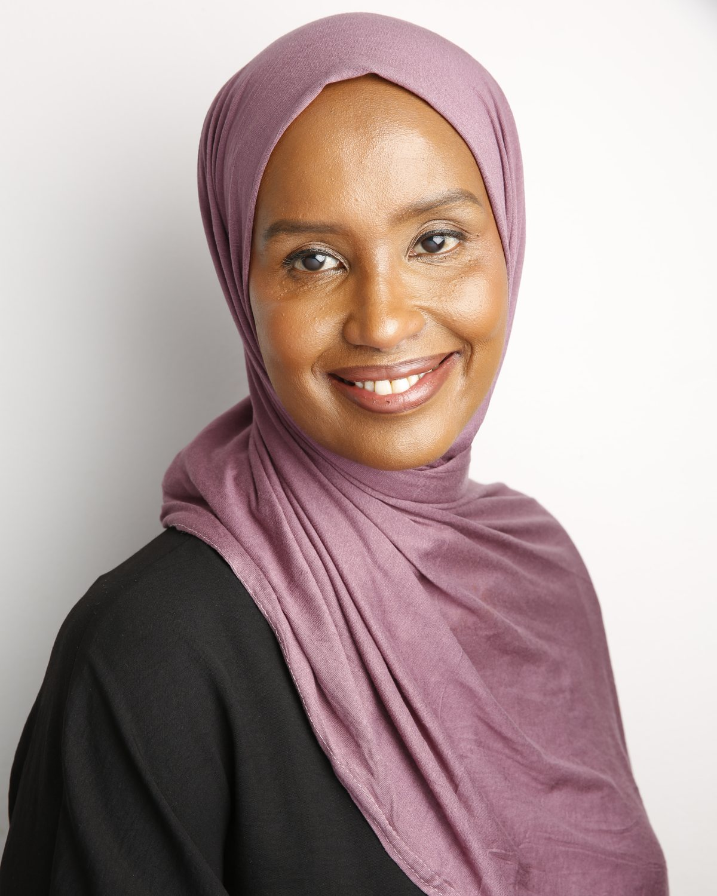

Finding your bearings when something has shifted.
Therapy offers a space to slow down, make sense of what's happening, and find a way forward that feels right for you.
Perhaps you're carrying more than anyone realises.
- Fatuma Hassan, MBACP & MNCPS (Acc.)
- Online, across the UK
- £65 per 50-minute session
- Free 15-minute introductory call

Fatuma HassanIntegrative counsellor · MBACP & MNCPS (Acc.)
A relationship may be causing pain. Work may feel increasingly difficult to sustain. Family responsibilities may be growing. You may be navigating a significant life change, or simply feeling disconnected from who you are and what you need.
You don't need to have everything figured out before reaching out. Most people don't. Often it is enough to notice that something no longer feels quite right.
Why New Bearings?
When the map you've been using no longer works
A relationship changes. Work becomes unsustainable. Family responsibilities grow. A loss reshapes your world. Questions emerge about who you are, where you belong, or what comes next.
At moments like these, it is easy to feel lost, stuck or disconnected from yourself.
Finding new bearings is not about becoming someone different. It is about understanding where you are now, reconnecting with what matters, and finding a direction that feels meaningful and authentic.
Therapy can provide a space to begin that process.
Perhaps you're
You might recognise some of this
If you recognise yourself in any of these experiences, therapy may provide a space to pause, reflect, and find your bearings again.
Where people often start
Four places this work tends to begin. You don't have to pick one, and most people find they overlap.
Relationships
Understanding patterns, connection and change
When relationships feel painful, confusing or disconnected.
ExploreLife transitions
Navigating change without losing yourself
When familiar ways of living no longer fit.
ExplorePressure, responsibility & overwhelm
When you're carrying too much
When everyone relies on you and there's little space left for yourself.
ExploreIdentity & sense of self
Belonging, values and understanding who you are
When you're questioning where you fit and what matters most.
ExploreTherapy that makes room for all of you
My practice is informed by an awareness of identity, culture, power and lived experience. I understand that our difficulties do not exist in isolation, and I aim to offer a space where important parts of who you are can be explored without judgement or the need to minimise your experience.
Culture, migration, faith, race, family expectations and the experience of moving between different worlds are not a separate topic here. They're part of the picture, whenever they matter to you.
Starting is simpler than it sounds
A free 15-minute call
No pressure to continue. Just a chance to get a feel for how it might be to work together.
We agree a time
Sessions are 50 minutes, online via Microsoft Teams, at a regular time that works around your week.
We begin, at your pace
Short-term or longer-term. You're free to decide whether this is right for you, and to stop at any point if it stops being helpful.
You don't need to be certain. Just taking a first step can be enough.
Book a free 15-minute call